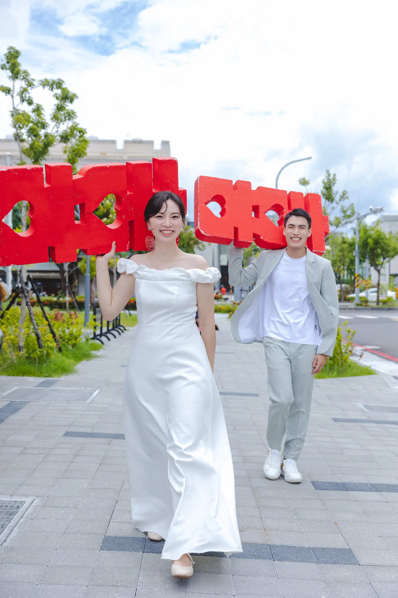

WEDDING INVITATION
詹博凱
&
金鈺珣
我們結婚了
2026 年 11 月 22 日 (星期日)
歲次丙午年 農曆十月十四日 (小雪)
雙方主婚人
新郎主婚人
祖母
陳罔市
外祖母
余阿娥
父親
詹進義
母親
張美雲
新娘主婚人
外祖父
余冬生
外祖母
余陳秀安
父親
金宜慶
母親
余小玲
宴席地點
成美文化園 松柏軒景觀餐廳
彰化縣永靖鄉港西村中山路二段86號
宴席時程
入席迎賓
11:00
準時開席
12:00

DIRECTIONS & REMINDERS
交通資訊
南下：
國道 1 號或 3 號接台 76 快速道路 → 22 號員林交流道下 → 轉台 1 線抵達
北上：
國道 1 號於 220 號北斗交流道下 → 沿 150 縣道 → 轉台 1 線抵達
為折抵園區停車，請開車的貴賓預先於下方表單提供車牌
高鐵彰化站：
出站後轉乘 7 號高鐵快捷公車 → 於永靖站下車
台鐵員林站：
步行約八分鐘至員林轉運站 → 轉乘 7 號高鐵快捷公車 → 於永靖站下車
Dress Code 穿搭色彩
誠摯邀請大家穿著溫潤的大地色系，與庭園綠意相互輝映
燕麥米色
溫柔奶茶
可可棕色
其他提醒
▪
婚宴場地無法攜帶寵物入內，請讓毛寶貝在舒適的家中休息
▪
現場已精心備妥威士忌、精選紅酒與啤酒暢飲，貴賓可無須自行備酒
出席資訊 & 遊園登記
請撥冗填寫，以利提前安排停車與園區門票，感謝您